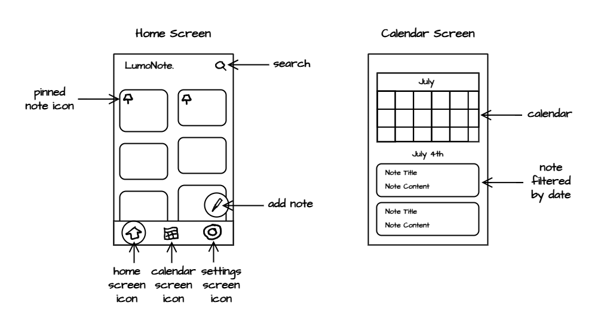
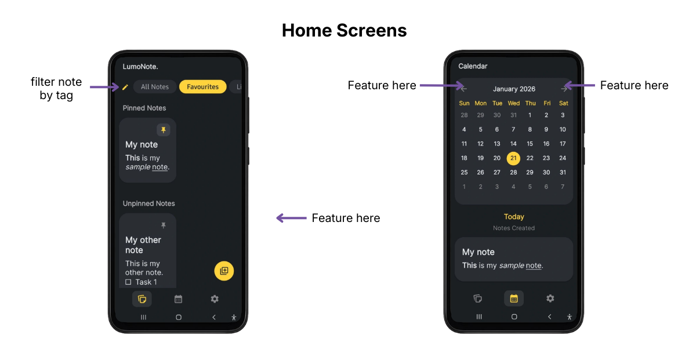
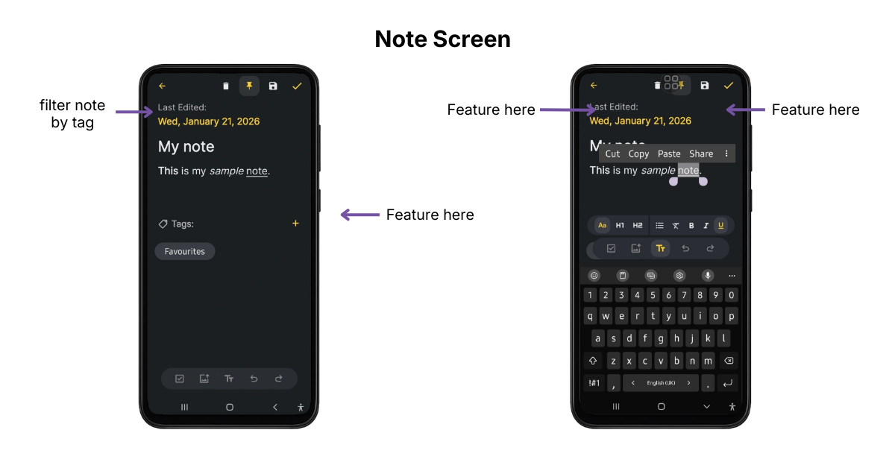

Project Details
LumoNote.
-
Type
Exploratory Project
-
Roles
UI/UX Designer, Developer
-
Date
Autumn 2025
-
Tools
Kotlin
-
Project Link
About This Project
LumoNote

The Problem.
Note apps are essential and are mainly used for the organization and coordination of people's lives.
- As one of those people, I also highly value the ability to customize how my plans and tasks (checklists) are presented without having to navigate through unnecessarily complex features.
- However, many note apps fall into the extremes of being either too simple or too complex, sometimes choosing to separate the checklist feature into a separate note type altogether.
With this as the jumping off point, I used this opportunity to practice my UX design process as well as develop my first prototype of the product for testing.
Constraints
I was both the designer and Developer, so the outcome was limited by:
- Time - scope had to be adjusted
- Current Skill Level - ideas had be scrapped for time, new to mobile dev
Crafting My Experience Into The Target User
The project was built on these key assumptions about the user:
- Organization, simplicity, approachability and speed is highly valued
- The combination of checklists and other key note features is highly valued
- Simple, in text images is highly valued
- Undo and redo are high frequency actions

Photo by Brett Jordan on Unsplash
Research
I sought references for simple note app designs and analyzed note apps like Google Keep Notes to note their strengths in the context of the problem.
I had these key takeaways from Google Keep Notes:
- While it was sufficiently simple, approachable, had note organization as well as many key note-taking features (rich text editing, undo & redo system, etc),
- It had clear separation between text and other features such as images, checklists, and links, limiting the user's ability to customize how information was presented.
Crafting LumoNote's Design
The LumoNote name was the first place I started. My mind wandered:
- Luminous, Illumination + Notes ➜ LumoNote ➜ Illuminate your notes and thoughts
With the app's theme and concept in place, I got to work on some low fidelity wireframes targeted at the core problem.

I wanted to limit the clutter on screen and make something simple and straightfoward. As the first thing the users saw when opening the app, it couldn't be overwhelming.
Key Features:
- Pinning would allow note prioritization (organization)
- The Calendar & View Notes views would allow multiple ways of quickly accessing existing notes (speed)
- Search is another way of quickly finding & accessing existing notes (speed)
- The home screen had everything that would be needed visible, so most things can be done in 1-2 taps (speed)
- The add notes button jumps out at you as something to interact with

The Notes Screen is where the user spends most of their time.
- As the note is the most important element, most of the screen is covered with the editable area.
- The note supports the easy intermingling of different note elements, images, checklists, etc.
- Undo & Redo supported
- The text formatting is only visible on tapping the text formatting button in the middle, otherwise is isn't visivle to lower visual clutter
- The text formatting is constrainted to what is needed for easy text editing, but is not bogged down by complex features. decent organization of note content can be acvompleished with just title and subtitle, bold, italics, bullet, clear font styles and underline
The most recent design had a couple major changes.

- Tagging on top of pinning - more robust note organization
- Manually Save Notes & give the user peace of mind that their work is saved.
- Flip button positions & Undo & Redo are high frequency, so they should be closer to the thumb on the right
- Divide text size and size style - Much easier to see who's related to what
My focus at this point was to craft a simple interface that would be easy to learn.

My focus at this point was to craft a simple interface that would be easy to learn.
Visual Design Decisions
The concept of having the user's thoughts be illuminated was combined with a sleek, modern look and high contrast so everything jumps out at you.
It's like the important things are shining or glowing (Luminous) against the dark background.
Note apps are essential and are mainly used for the organization and coordination of people's lives.
The golden yellows give off a warm feeling and are striking against a cooler, blue-black background.
The Inter font gives a modern tech feel and is very easy to read throughout the app.
Note apps are essential and are mainly used for the organization and coordination of people's lives.
Development
Note apps are essential and are mainly used for the organization and coordination of people's lives.
Outcome & Reflection
- I barely used the Calendar screen, so it wasn't ultimately contributing to the note organization as much as was assumed and can be removed